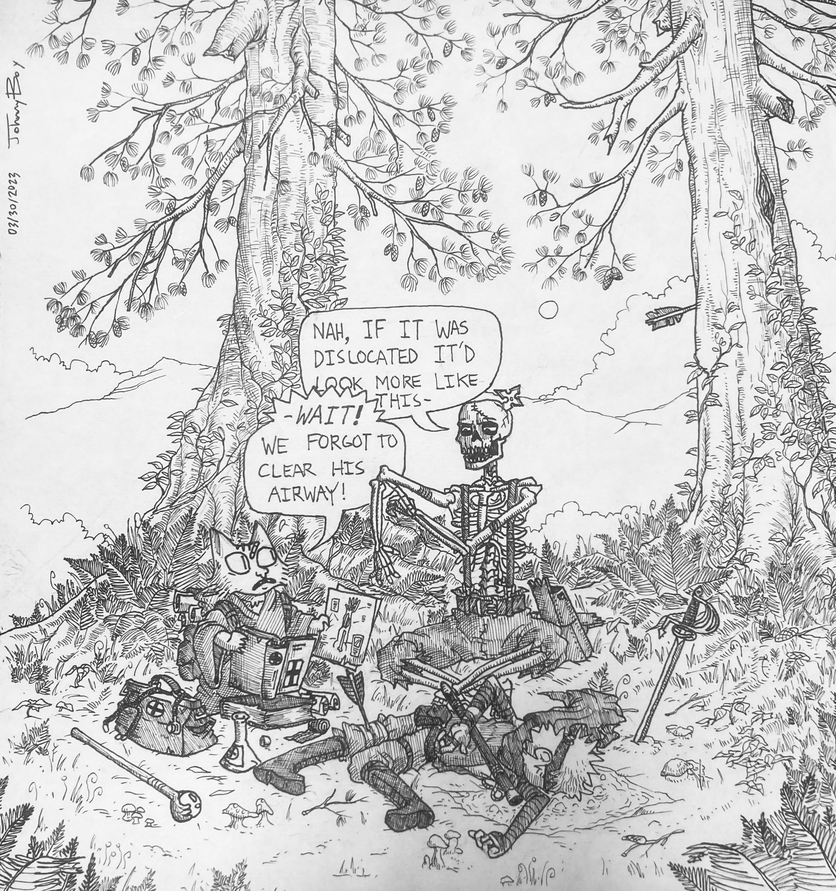
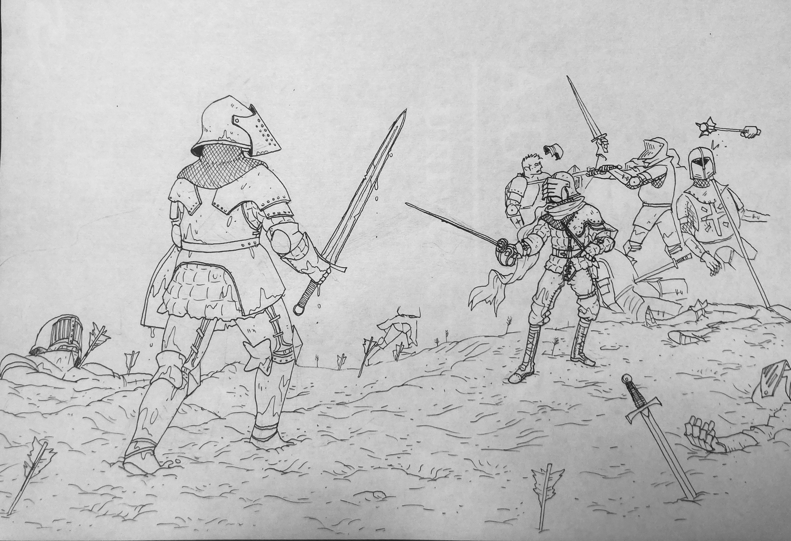
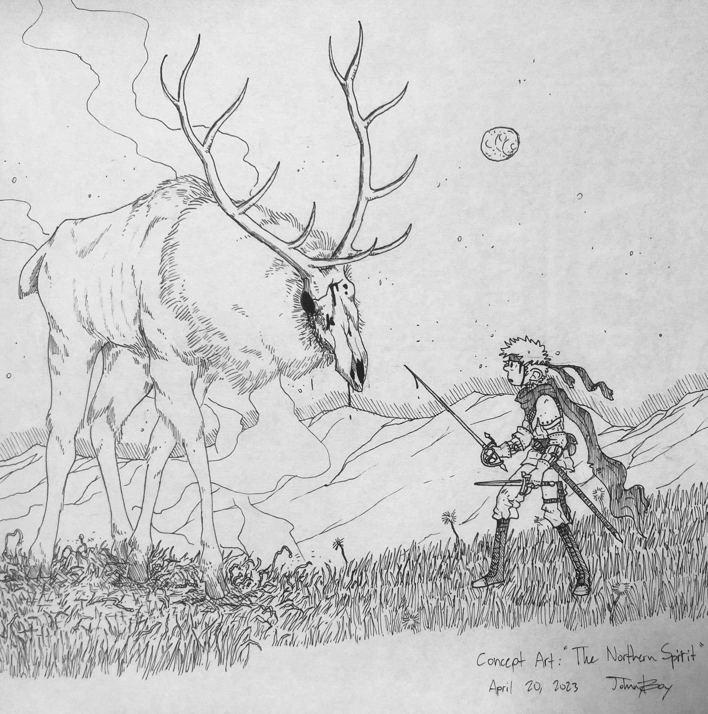
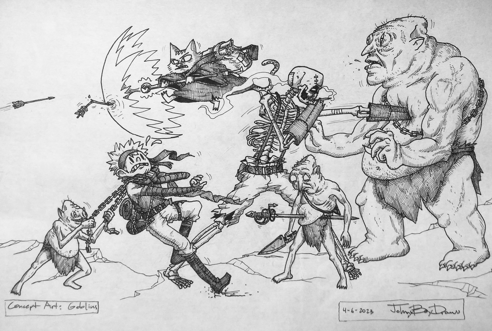

COVER ART (March 27, 2023)
This is some potential cover art that I just finished up today. Took some big inspiration from that classic "Army of Darkness" poster, among others. (A good buddy has told me that "Conan" was one of the first to really popularize this sort of pose.) I think it's fitting, Connor is the main focus of book one and as such has the center stage here. Plus he looks cool. I went into this with the mindset of a kid walking into a bookfair; In that, if I was back in middle school and saw this on the shelf, it'd be bought, and read, and reread within the next hour. I might still tweak a couple things, like I'm not sure if the new title art is exactly how I want it to look, and I might touch up some other mistakes as I notice them. We've got some time before it's published, not like I'm in a hurry to get it just right.

ABC's (March 30, 2023)
"ABC's" in the emergency medical field refers to "Airway, Breathing, and Circulation." These are all vital to sustain life in a patient, and this is generally the order in which you should prioritize them. If you're new to the field it's not always easy to know what needs to be prioritized and what doesn't, which is what we see here. (A wound such as an impaled arrow can be pretty distracting, and Meowmi isn't a very experienced healer.) I hate that we won't see any of her or Dath until the second book, I like them both a lot as characters, and they really tie up the loose ends as far as character dynamics are concerned. All in good time.

CONNOR'S CONSCIENCE (April 23, 2023)
A one-off comic I finished today. Didn't really put any time into hatching or color here, pressed for time these days. I might remaster it at some point, but for now it's just a quick goof I wanted to draw. I wanna make more of these sorts of posts, short and fun. Plus, it helps to spread word about the website as well if it gets reposted or retweeted or whatever. This one might be a little too edgy to sneak into the actual books, however.

MUDDY DUEL (April 13, 2023)
Had medieval battles on the brain, and I've been trying to study up a bit on sword combat in general. (Specifically armor testing videos and HEMA demonstrations on Youtube.) This one will probably remain unfinished, I wanted to have a whole crowd of people in the background falling over each other and general chaos, but I also wanted to go ahead and move on to something else. Besides I need to rework this idea to account for firearms, and study up on the actual historical transition from spears and shields to gunpowder and lead.

NORTHERN SPIRIT (April 20, 2023)
An upcoming character. We won't really learn anything about the Northern Spirit until way later, so I'm leaving this section light. I do wanna change the design to be a little more humanoid or ape-like though.

GOBLINS (April 06, 2023)
Just a fun piece I wanted to do with a little bit of actual fighting going on. I'm not sure when or where goblins would come into the story, but I like their design and their vibe, so I'll probably squeeze them in somewhere. Only issue is I don't want it to feel like filler, as they would be pretty much unrelated to the larger plot. It'd feel akin to a sidequest.
1
2
3
4